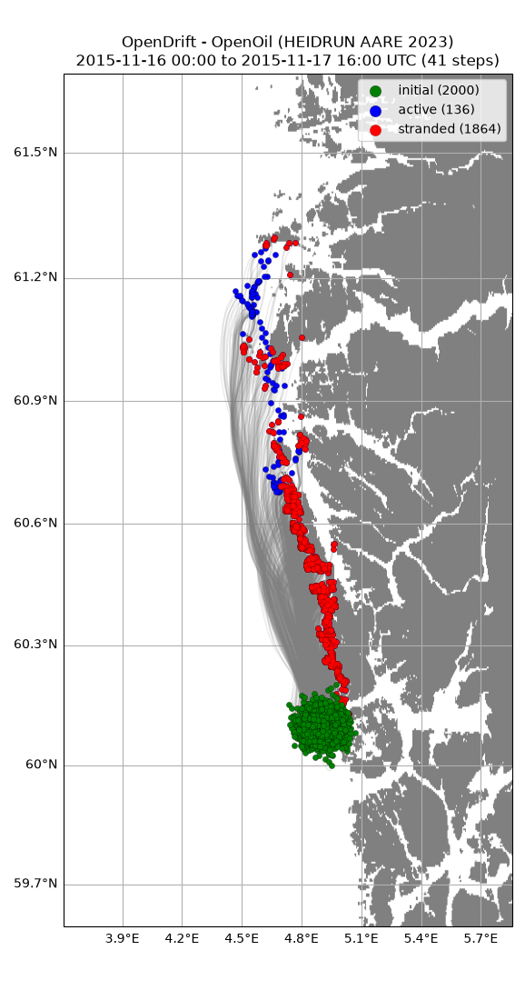
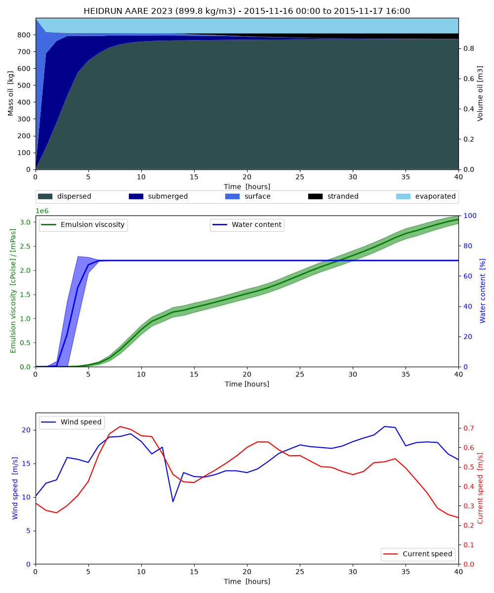
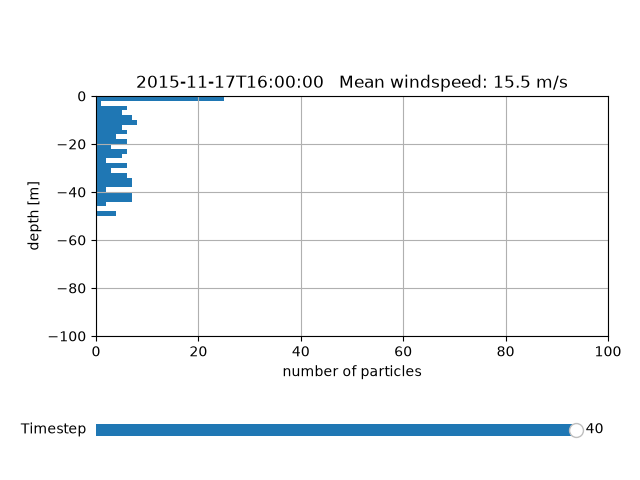
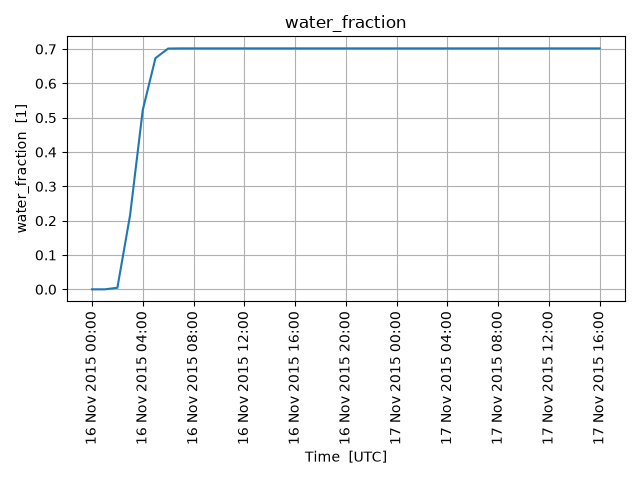
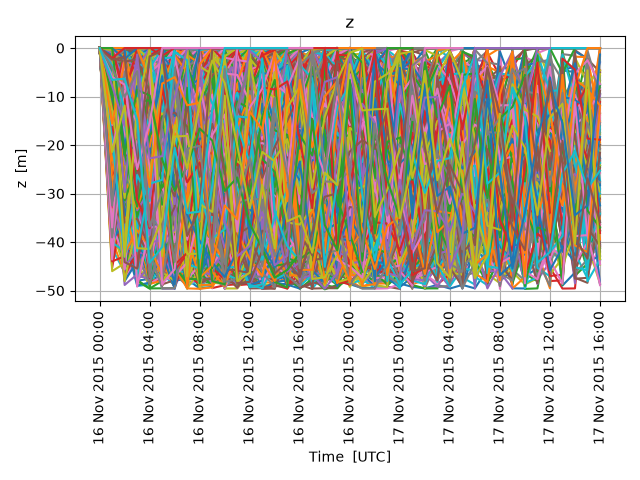
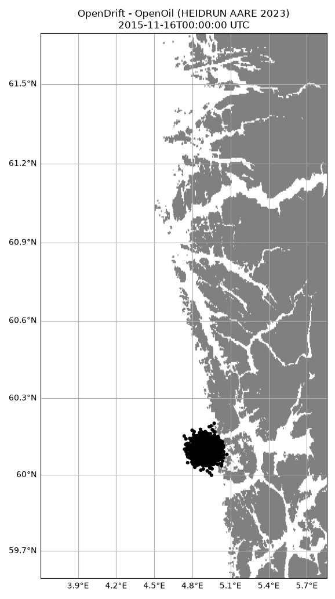

Note
Go to the end to download the full example code.
Openoil
17:06:31 INFO opendrift:569: OpenDriftSimulation initialised (version 1.14.11 / v1.14.12-66-g07283eb)
['GENERIC BUNKER C', 'GENERIC DIESEL', 'GENERIC FUEL OIL No. 6', 'GENERIC FUEL OIL No.2', 'GENERIC GASOLINE', 'GENERIC HEAVY CRUDE', 'GENERIC HEAVY FUEL OIL', 'GENERIC HOME HEATING OIL', 'GENERIC INTERMEDIATE FUEL OIL 180', 'GENERIC INTERMEDIATE FUEL OIL 300', 'GENERIC LIGHT CRUDE', 'GENERIC MEDIUM CRUDE', 'AASGARD A 2003', 'AASTA HANSTEEN BLEND 2020', 'ALTA 2016', 'ALVE 2010', 'ALVE 2014', 'ALVHEIM BLEND 2009', 'ALVHEIM BOA 2009', 'ALVHEIM KAMELEON 2009', 'ALVHEIM KNELER 2009', 'ASGARD, STATOIL', 'ATLA KONDENSAT 2013', 'AVALDSNES 2012', 'BALDER 2002', 'BALDER BLEND 2010', 'BALDER BLEND 2025', 'BLANE 2009', 'BOYLA CRUDE 2016', 'BRAGE 2013', 'BRASSE 2018', 'BREAM 2011', 'BREIDABLIKK 2023', 'BRYNHILD CRUDE 2015', 'CALYPSO 2024', 'CAURUS 2011', 'CERISA 2025', 'DRAUGEN 2008', 'DRIVIS 2017', 'DUGONG 2022', 'DUVA 2021', 'DVALIN 2020', 'EKOFISK 2002', 'EKOFISK BLEND 2000', 'EKOFISK BLEND 2011', 'EKOFISK J 2015', 'ELDFISK 2002', 'ELDFISK B 2015', 'ELDFISK BLEND 2011', 'ELDFISK KOMPLEKS 2015', 'ELLI 1999', 'ELLI SOUTH 1999', 'EMBLA 2002', 'FENJA (PIL) 2015', 'FOGELBERG CONDENSATE 2021', 'FORSETI 2002', 'FOSSEKALL 2013', 'FRAM 2013', 'FROSK 2020', 'FROY 1996', 'GARANTIANA 2013', 'GAS OIL 10 ppm S 2017', 'GAUPE 2011', 'GINA KROG CRUDE 2018', 'GJOA 2011', 'GLITNE 2002', 'GOLIAT BLEND 50/50 2008', 'GOLIAT BLEND 70/30 2008', 'GOLIAT KOBBE 2008', 'GOLIAT REALGRUNNEN 2001', 'GOLIAT REALGRUNNEN 2008', 'GRANE 1997', 'GROSBEAK 2012', 'GUDRUN 2012', 'GUDRUN 2019', 'GULLFAKS A BLEND 2010', 'GULLFAKS C BLEND 2010', 'GULLFAKS SOR 1996', 'GYDA 2002', 'HAVIS 2013', 'HEAVY DISTILLATE MARINE ECA 50 2017', 'HEIDRUN AARE 2023', 'HEIDRUN AaRE 2004', 'HEIDRUN EXPORT BLEND 2004', 'HEIDRUN TILJE 2004', 'HULDRA KONDENSAT 1998', 'IFO-180LS 2014', 'IFO-180NS 2014', 'IFO-380LS 2014', 'IFO-80LS 2014', 'IRIS CONDENSATE 2020', 'IVAR AASEN 2012', 'JORDBAER 2011', 'KRISTIN 2006', 'KVITEBJORN 2009', 'KVITEBJORN 2019', 'LANGFJELLET 2023', 'LAVRANS 1997', 'LILLE PRINSEN 2022', 'LILLEFRIGG KONDENSAT 1996', 'LINERLE 2005', 'LUNO 2011', 'LUNO II 2014', 'MARIA 2013', 'MARINE GAS OIL 500 ppm S 2017', 'MARTIN LINGE CONDENSATE 2016', 'MARTIN LINGE CRUDE 2016', 'MARULK 2014', 'MIDGARD 1991', 'MORVIN 2008', 'NJORD 1997', 'NJORD 2003', 'NORNE 1997', 'NORNE BLEND 2010', 'NORNE CRUDE 2017', 'ODA 2019', 'OFELIA 2023', 'ORMEN LANGE KONDENSAT 2008', 'OSEBERG A 2013', 'OSEBERG BLEND 2007', 'OSEBERG C 1995', 'OSEBERG C 2013', 'OSEBERG OST 1998', 'OSEBERG OST 2013', 'OSEBERG SOR 2000', 'OSEBERG SOR 2013', 'OSEBERG, EXXON', 'OSELVAR 2012', 'RINGHORNE 2002', 'RINGHORNE 2025', 'ROTTERDAM DIESEL 2017', 'SF NORD BRENT 2021', 'SIGYN CONDENSATE 2017', 'SKARFJELL 2014', 'SKARV 2004', 'SKARV KONDENSAT 2014', 'SKOGUL 2020', 'SKRUGARD 2012', 'SLEIPNER KONDENSAT 2002', 'SLEIPNER VEST 1998', 'SMORBUKK 2003', 'SMORBUKK KONDENSAT 2003', 'SMORBUKK SOR 2003', 'SNOHVIT KONDENSAT 2001', 'SNORRE B 2004', 'SNORRE TLP 2004', 'STAER 2010', 'STATFJORD A 2001', 'STATFJORD B 2001', 'STATFJORD C 2001', 'SVALE 2010', 'SVALIN 2014', 'SYGNA BRENT 2021', 'TAMBAR 2002', 'TAU 1999', 'TOR 2002', 'TOR II 2022', 'TORDIS 2002', 'TRESTAKK 2008', 'TROLL, STATOIL', 'TRYM KONDENSAT 2011', 'TYRIHANS NORD 2004', 'TYRIHANS SOR 2004', 'TYRVING 2025', 'ULA 1999', 'ULTRA LOW SULFUR FUEL OIL 2017', 'UTGARD CONDENSATE 2021', 'VALE 2001', 'VALE 2014', 'VALHALL 2002', 'VALHALL 2021', 'VARG 2000', 'VEGA CONDENSATE 2015', 'VESLEFRIKK 2012', 'VIGDIS 2004', 'VILJE 2009', 'VISUND 2009', 'VISUND CRUDE OIL 2020', 'VISUND SOR CONDENSATE 2020', 'VOLUND 2010', 'VOLVE 2006', 'WIDE RANGE GAS OIL 2017', 'WISTING 2015', 'WISTING CENTRAL 2017', 'YME 2023']
Arome atmospheric model
reader_arome = reader_netCDF_CF_generic.Reader(tdf +
'16Nov2015_NorKyst_z_surface/arome_subset_16Nov2015.nc')
# Norkyst ocean model
reader_norkyst = reader_netCDF_CF_generic.Reader(tdf +
'16Nov2015_NorKyst_z_surface/norkyst800_subset_16Nov2015.nc')
o.add_reader([reader_norkyst, reader_arome])
17:06:31 INFO opendrift.readers:67: Opening file with xr.open_dataset
17:06:32 INFO opendrift.readers.reader_netCDF_CF_generic:340: Detected dimensions: {'time': 'time', 'x': 'x', 'y': 'y'}
17:06:32 INFO opendrift.readers:67: Opening file with xr.open_dataset
17:06:32 INFO opendrift.readers.reader_netCDF_CF_generic:340: Detected dimensions: {'x': 'X', 'y': 'Y', 'z': 'depth', 'time': 'time'}
Adjusting some configuration
o.set_config('processes:evaporation', True)
o.set_config('processes:emulsification', True)
o.set_config('drift:vertical_mixing', True)
o.set_config('vertical_mixing:timestep', 5)
Seeding some particles
time = reader_arome.start_time
oil_type = 'HEIDRUN AARE 2023'
o.seed_elements(lon=4.9, lat=60.1, radius=3000, number=2000,
time=time, z=0, oil_type=oil_type)
17:06:32 INFO opendrift.models.openoil.adios.dirjs:86: Querying ADIOS database for oil: HEIDRUN AARE 2023
17:06:32 INFO opendrift.models.openoil.openoil:1731: Using density 899.8009199999999 and viscosity 5.2282765673226704e-05 of oiltype HEIDRUN AARE 2023
17:06:32 INFO opendrift.models.basemodel.environment:203: Adding a global landmask from GSHHG
17:06:38 INFO opendrift.models.basemodel.environment:227: Fallback values will be used for the following variables which have no readers:
17:06:38 INFO opendrift.models.basemodel.environment:230: sea_surface_height: 0.000000
17:06:38 INFO opendrift.models.basemodel.environment:230: upward_sea_water_velocity: 0.000000
17:06:38 INFO opendrift.models.basemodel.environment:230: sea_surface_wave_significant_height: 0.000000
17:06:38 INFO opendrift.models.basemodel.environment:230: sea_surface_wave_stokes_drift_x_velocity: 0.000000
17:06:38 INFO opendrift.models.basemodel.environment:230: sea_surface_wave_stokes_drift_y_velocity: 0.000000
17:06:38 INFO opendrift.models.basemodel.environment:230: sea_surface_wave_period_at_variance_spectral_density_maximum: 0.000000
17:06:38 INFO opendrift.models.basemodel.environment:230: sea_surface_wave_mean_period_from_variance_spectral_density_second_frequency_moment: 0.000000
17:06:38 INFO opendrift.models.basemodel.environment:230: sea_ice_area_fraction: 0.000000
17:06:38 INFO opendrift.models.basemodel.environment:230: sea_ice_x_velocity: 0.000000
17:06:38 INFO opendrift.models.basemodel.environment:230: sea_ice_y_velocity: 0.000000
17:06:38 INFO opendrift.models.basemodel.environment:230: sea_water_temperature: 10.000000
17:06:38 INFO opendrift.models.basemodel.environment:230: sea_water_salinity: 34.000000
17:06:38 INFO opendrift.models.basemodel.environment:230: sea_floor_depth_below_sea_level: 10000.000000
17:06:38 INFO opendrift.models.basemodel.environment:230: horizontal_diffusivity: 0.000000
17:06:38 INFO opendrift.models.basemodel.environment:230: ocean_vertical_diffusivity: 0.020000
17:06:38 INFO opendrift.models.basemodel.environment:230: ocean_mixed_layer_thickness: 50.000000
Running model
o.run(steps=4*40, time_step=900, time_step_output=3600)
17:06:38 INFO opendrift:1911: Skipping environment variable upward_sea_water_velocity because of condition ['drift:vertical_advection', 'is', False]
17:06:38 INFO opendrift:1922: Storing previous values of element property lon because of condition (('general:coastline_action', 'in', ['stranding', 'previous']), 'or', ('general:seafloor_action', 'in', ['previous']))
17:06:38 INFO opendrift:1922: Storing previous values of element property lat because of condition (('general:coastline_action', 'in', ['stranding', 'previous']), 'or', ('general:seafloor_action', 'in', ['previous']))
17:06:38 INFO opendrift:958: Using existing reader for land_binary_mask to move elements to ocean
17:06:38 INFO opendrift:992: Moving 1 out of 2000 points from land to water
17:06:38 INFO opendrift.models.openoil.openoil:697: Oil-water surface tension is 0.032418 Nm
17:06:38 INFO opendrift.models.openoil.openoil:706: Using max water fractions [0.679, 0.725] for temperatures [5.0, 15.0] for oiltype HEIDRUN AARE 2023
17:06:38 INFO opendrift.models.openoil.openoil:707: Corresponding max water fraction from GNOME is 0.9
17:06:38 INFO opendrift:2238: 2015-11-16 00:00:00 - step 1 of 160 - 2000 active elements (0 deactivated)
17:06:38 INFO opendrift:2238: 2015-11-16 00:15:00 - step 2 of 160 - 2000 active elements (0 deactivated)
17:06:39 INFO opendrift:2238: 2015-11-16 00:30:00 - step 3 of 160 - 2000 active elements (0 deactivated)
17:06:39 INFO opendrift:2238: 2015-11-16 00:45:00 - step 4 of 160 - 2000 active elements (0 deactivated)
17:06:39 INFO opendrift:2238: 2015-11-16 01:00:00 - step 5 of 160 - 2000 active elements (0 deactivated)
17:06:39 INFO opendrift:2238: 2015-11-16 01:15:00 - step 6 of 160 - 2000 active elements (0 deactivated)
17:06:40 INFO opendrift:2238: 2015-11-16 01:30:00 - step 7 of 160 - 1999 active elements (1 deactivated)
17:06:40 INFO opendrift:2238: 2015-11-16 01:45:00 - step 8 of 160 - 1998 active elements (2 deactivated)
17:06:40 INFO opendrift:2238: 2015-11-16 02:00:00 - step 9 of 160 - 1998 active elements (2 deactivated)
17:06:40 INFO opendrift:2238: 2015-11-16 02:15:00 - step 10 of 160 - 1998 active elements (2 deactivated)
17:06:41 INFO opendrift:2238: 2015-11-16 02:30:00 - step 11 of 160 - 1998 active elements (2 deactivated)
17:06:41 INFO opendrift:2238: 2015-11-16 02:45:00 - step 12 of 160 - 1998 active elements (2 deactivated)
17:06:41 INFO opendrift:2238: 2015-11-16 03:00:00 - step 13 of 160 - 1998 active elements (2 deactivated)
17:06:41 INFO opendrift:2238: 2015-11-16 03:15:00 - step 14 of 160 - 1998 active elements (2 deactivated)
17:06:42 INFO opendrift:2238: 2015-11-16 03:30:00 - step 15 of 160 - 1998 active elements (2 deactivated)
17:06:42 INFO opendrift:2238: 2015-11-16 03:45:00 - step 16 of 160 - 1998 active elements (2 deactivated)
17:06:42 INFO opendrift:2238: 2015-11-16 04:00:00 - step 17 of 160 - 1998 active elements (2 deactivated)
17:06:42 INFO opendrift:2238: 2015-11-16 04:15:00 - step 18 of 160 - 1998 active elements (2 deactivated)
17:06:43 INFO opendrift:2238: 2015-11-16 04:30:00 - step 19 of 160 - 1998 active elements (2 deactivated)
17:06:43 INFO opendrift:2238: 2015-11-16 04:45:00 - step 20 of 160 - 1998 active elements (2 deactivated)
17:06:43 INFO opendrift:2238: 2015-11-16 05:00:00 - step 21 of 160 - 1998 active elements (2 deactivated)
17:06:43 INFO opendrift:2238: 2015-11-16 05:15:00 - step 22 of 160 - 1998 active elements (2 deactivated)
17:06:43 INFO opendrift:2238: 2015-11-16 05:30:00 - step 23 of 160 - 1998 active elements (2 deactivated)
17:06:44 INFO opendrift:2238: 2015-11-16 05:45:00 - step 24 of 160 - 1998 active elements (2 deactivated)
17:06:44 INFO opendrift:2238: 2015-11-16 06:00:00 - step 25 of 160 - 1998 active elements (2 deactivated)
17:06:44 INFO opendrift:2238: 2015-11-16 06:15:00 - step 26 of 160 - 1998 active elements (2 deactivated)
17:06:44 INFO opendrift:2238: 2015-11-16 06:30:00 - step 27 of 160 - 1998 active elements (2 deactivated)
17:06:44 INFO opendrift:2238: 2015-11-16 06:45:00 - step 28 of 160 - 1998 active elements (2 deactivated)
17:06:45 INFO opendrift:2238: 2015-11-16 07:00:00 - step 29 of 160 - 1997 active elements (3 deactivated)
17:06:45 INFO opendrift:2238: 2015-11-16 07:15:00 - step 30 of 160 - 1997 active elements (3 deactivated)
17:06:45 INFO opendrift:2238: 2015-11-16 07:30:00 - step 31 of 160 - 1997 active elements (3 deactivated)
17:06:45 INFO opendrift:2238: 2015-11-16 07:45:00 - step 32 of 160 - 1997 active elements (3 deactivated)
17:06:45 WARNING opendrift.readers.basereader.structured:324: Data block from /root/project/tests/test_data/16Nov2015_NorKyst_z_surface/arome_subset_16Nov2015.nc not large enough to cover element positions within timestep. Buffer size (4) must be increased. See `Variables.set_buffer_size`.
17:06:46 INFO opendrift:2238: 2015-11-16 08:00:00 - step 33 of 160 - 1997 active elements (3 deactivated)
17:06:46 INFO opendrift:2238: 2015-11-16 08:15:00 - step 34 of 160 - 1997 active elements (3 deactivated)
17:06:46 INFO opendrift:2238: 2015-11-16 08:30:00 - step 35 of 160 - 1997 active elements (3 deactivated)
17:06:46 WARNING opendrift.readers.basereader.structured:324: Data block from /root/project/tests/test_data/16Nov2015_NorKyst_z_surface/arome_subset_16Nov2015.nc not large enough to cover element positions within timestep. Buffer size (4) must be increased. See `Variables.set_buffer_size`.
17:06:46 INFO opendrift:2238: 2015-11-16 08:45:00 - step 36 of 160 - 1997 active elements (3 deactivated)
17:06:46 WARNING opendrift.readers.basereader.structured:324: Data block from /root/project/tests/test_data/16Nov2015_NorKyst_z_surface/norkyst800_subset_16Nov2015.nc not large enough to cover element positions within timestep. Buffer size (8) must be increased. See `Variables.set_buffer_size`.
17:06:46 WARNING opendrift.readers.basereader.structured:324: Data block from /root/project/tests/test_data/16Nov2015_NorKyst_z_surface/arome_subset_16Nov2015.nc not large enough to cover element positions within timestep. Buffer size (4) must be increased. See `Variables.set_buffer_size`.
17:06:47 INFO opendrift:2238: 2015-11-16 09:00:00 - step 37 of 160 - 1996 active elements (4 deactivated)
17:06:47 INFO opendrift:2238: 2015-11-16 09:15:00 - step 38 of 160 - 1995 active elements (5 deactivated)
17:06:47 WARNING opendrift.readers.basereader.structured:324: Data block from /root/project/tests/test_data/16Nov2015_NorKyst_z_surface/arome_subset_16Nov2015.nc not large enough to cover element positions within timestep. Buffer size (4) must be increased. See `Variables.set_buffer_size`.
17:06:47 INFO opendrift:2238: 2015-11-16 09:30:00 - step 39 of 160 - 1995 active elements (5 deactivated)
17:06:47 WARNING opendrift.readers.basereader.structured:324: Data block from /root/project/tests/test_data/16Nov2015_NorKyst_z_surface/arome_subset_16Nov2015.nc not large enough to cover element positions within timestep. Buffer size (4) must be increased. See `Variables.set_buffer_size`.
17:06:47 INFO opendrift:2238: 2015-11-16 09:45:00 - step 40 of 160 - 1995 active elements (5 deactivated)
17:06:47 WARNING opendrift.readers.basereader.structured:324: Data block from /root/project/tests/test_data/16Nov2015_NorKyst_z_surface/norkyst800_subset_16Nov2015.nc not large enough to cover element positions within timestep. Buffer size (8) must be increased. See `Variables.set_buffer_size`.
17:06:47 WARNING opendrift.readers.basereader.structured:324: Data block from /root/project/tests/test_data/16Nov2015_NorKyst_z_surface/arome_subset_16Nov2015.nc not large enough to cover element positions within timestep. Buffer size (4) must be increased. See `Variables.set_buffer_size`.
17:06:47 INFO opendrift:2238: 2015-11-16 10:00:00 - step 41 of 160 - 1995 active elements (5 deactivated)
17:06:48 INFO opendrift:2238: 2015-11-16 10:15:00 - step 42 of 160 - 1995 active elements (5 deactivated)
17:06:48 INFO opendrift:2238: 2015-11-16 10:30:00 - step 43 of 160 - 1995 active elements (5 deactivated)
17:06:48 WARNING opendrift.readers.basereader.structured:324: Data block from /root/project/tests/test_data/16Nov2015_NorKyst_z_surface/norkyst800_subset_16Nov2015.nc not large enough to cover element positions within timestep. Buffer size (8) must be increased. See `Variables.set_buffer_size`.
17:06:48 WARNING opendrift.readers.basereader.structured:324: Data block from /root/project/tests/test_data/16Nov2015_NorKyst_z_surface/arome_subset_16Nov2015.nc not large enough to cover element positions within timestep. Buffer size (4) must be increased. See `Variables.set_buffer_size`.
17:06:48 INFO opendrift:2238: 2015-11-16 10:45:00 - step 44 of 160 - 1995 active elements (5 deactivated)
17:06:48 WARNING opendrift.readers.basereader.structured:324: Data block from /root/project/tests/test_data/16Nov2015_NorKyst_z_surface/norkyst800_subset_16Nov2015.nc not large enough to cover element positions within timestep. Buffer size (8) must be increased. See `Variables.set_buffer_size`.
17:06:48 WARNING opendrift.readers.basereader.structured:324: Data block from /root/project/tests/test_data/16Nov2015_NorKyst_z_surface/arome_subset_16Nov2015.nc not large enough to cover element positions within timestep. Buffer size (4) must be increased. See `Variables.set_buffer_size`.
17:06:48 INFO opendrift:2238: 2015-11-16 11:00:00 - step 45 of 160 - 1995 active elements (5 deactivated)
17:06:49 INFO opendrift:2238: 2015-11-16 11:15:00 - step 46 of 160 - 1995 active elements (5 deactivated)
17:06:49 INFO opendrift:2238: 2015-11-16 11:30:00 - step 47 of 160 - 1995 active elements (5 deactivated)
17:06:49 WARNING opendrift.readers.basereader.structured:324: Data block from /root/project/tests/test_data/16Nov2015_NorKyst_z_surface/norkyst800_subset_16Nov2015.nc not large enough to cover element positions within timestep. Buffer size (8) must be increased. See `Variables.set_buffer_size`.
17:06:49 WARNING opendrift.readers.basereader.structured:324: Data block from /root/project/tests/test_data/16Nov2015_NorKyst_z_surface/arome_subset_16Nov2015.nc not large enough to cover element positions within timestep. Buffer size (4) must be increased. See `Variables.set_buffer_size`.
17:06:49 INFO opendrift:2238: 2015-11-16 11:45:00 - step 48 of 160 - 1995 active elements (5 deactivated)
17:06:49 WARNING opendrift.readers.basereader.structured:324: Data block from /root/project/tests/test_data/16Nov2015_NorKyst_z_surface/norkyst800_subset_16Nov2015.nc not large enough to cover element positions within timestep. Buffer size (8) must be increased. See `Variables.set_buffer_size`.
17:06:49 WARNING opendrift.readers.basereader.structured:324: Data block from /root/project/tests/test_data/16Nov2015_NorKyst_z_surface/arome_subset_16Nov2015.nc not large enough to cover element positions within timestep. Buffer size (4) must be increased. See `Variables.set_buffer_size`.
17:06:49 INFO opendrift:2238: 2015-11-16 12:00:00 - step 49 of 160 - 1995 active elements (5 deactivated)
17:06:49 INFO opendrift:2238: 2015-11-16 12:15:00 - step 50 of 160 - 1994 active elements (6 deactivated)
17:06:50 INFO opendrift:2238: 2015-11-16 12:30:00 - step 51 of 160 - 1993 active elements (7 deactivated)
17:06:50 INFO opendrift:2238: 2015-11-16 12:45:00 - step 52 of 160 - 1992 active elements (8 deactivated)
17:06:50 INFO opendrift:2238: 2015-11-16 13:00:00 - step 53 of 160 - 1991 active elements (9 deactivated)
17:06:51 INFO opendrift:2238: 2015-11-16 13:15:00 - step 54 of 160 - 1985 active elements (15 deactivated)
17:06:51 INFO opendrift:2238: 2015-11-16 13:30:00 - step 55 of 160 - 1977 active elements (23 deactivated)
17:06:51 INFO opendrift:2238: 2015-11-16 13:45:00 - step 56 of 160 - 1954 active elements (46 deactivated)
17:06:51 INFO opendrift:2238: 2015-11-16 14:00:00 - step 57 of 160 - 1922 active elements (78 deactivated)
17:06:52 INFO opendrift:2238: 2015-11-16 14:15:00 - step 58 of 160 - 1877 active elements (123 deactivated)
17:06:52 INFO opendrift:2238: 2015-11-16 14:30:00 - step 59 of 160 - 1828 active elements (172 deactivated)
17:06:52 INFO opendrift:2238: 2015-11-16 14:45:00 - step 60 of 160 - 1797 active elements (203 deactivated)
17:06:52 INFO opendrift:2238: 2015-11-16 15:00:00 - step 61 of 160 - 1752 active elements (248 deactivated)
17:06:52 INFO opendrift:2238: 2015-11-16 15:15:00 - step 62 of 160 - 1713 active elements (287 deactivated)
17:06:53 INFO opendrift:2238: 2015-11-16 15:30:00 - step 63 of 160 - 1684 active elements (316 deactivated)
17:06:53 INFO opendrift:2238: 2015-11-16 15:45:00 - step 64 of 160 - 1664 active elements (336 deactivated)
17:06:53 INFO opendrift:2238: 2015-11-16 16:00:00 - step 65 of 160 - 1637 active elements (363 deactivated)
17:06:53 INFO opendrift:2238: 2015-11-16 16:15:00 - step 66 of 160 - 1625 active elements (375 deactivated)
17:06:54 INFO opendrift:2238: 2015-11-16 16:30:00 - step 67 of 160 - 1610 active elements (390 deactivated)
17:06:54 INFO opendrift:2238: 2015-11-16 16:45:00 - step 68 of 160 - 1597 active elements (403 deactivated)
17:06:54 INFO opendrift:2238: 2015-11-16 17:00:00 - step 69 of 160 - 1570 active elements (430 deactivated)
17:06:54 INFO opendrift:2238: 2015-11-16 17:15:00 - step 70 of 160 - 1550 active elements (450 deactivated)
17:06:55 INFO opendrift:2238: 2015-11-16 17:30:00 - step 71 of 160 - 1523 active elements (477 deactivated)
17:06:55 INFO opendrift:2238: 2015-11-16 17:45:00 - step 72 of 160 - 1499 active elements (501 deactivated)
17:06:55 INFO opendrift:2238: 2015-11-16 18:00:00 - step 73 of 160 - 1464 active elements (536 deactivated)
17:06:55 INFO opendrift:2238: 2015-11-16 18:15:00 - step 74 of 160 - 1419 active elements (581 deactivated)
17:06:55 INFO opendrift:2238: 2015-11-16 18:30:00 - step 75 of 160 - 1383 active elements (617 deactivated)
17:06:56 INFO opendrift:2238: 2015-11-16 18:45:00 - step 76 of 160 - 1333 active elements (667 deactivated)
17:06:56 INFO opendrift:2238: 2015-11-16 19:00:00 - step 77 of 160 - 1298 active elements (702 deactivated)
17:06:56 INFO opendrift:2238: 2015-11-16 19:15:00 - step 78 of 160 - 1267 active elements (733 deactivated)
17:06:56 INFO opendrift:2238: 2015-11-16 19:30:00 - step 79 of 160 - 1240 active elements (760 deactivated)
17:06:57 INFO opendrift:2238: 2015-11-16 19:45:00 - step 80 of 160 - 1208 active elements (792 deactivated)
17:06:57 INFO opendrift:2238: 2015-11-16 20:00:00 - step 81 of 160 - 1173 active elements (827 deactivated)
17:06:57 INFO opendrift:2238: 2015-11-16 20:15:00 - step 82 of 160 - 1127 active elements (873 deactivated)
17:06:57 INFO opendrift:2238: 2015-11-16 20:30:00 - step 83 of 160 - 1088 active elements (912 deactivated)
17:06:57 INFO opendrift:2238: 2015-11-16 20:45:00 - step 84 of 160 - 1051 active elements (949 deactivated)
17:06:58 INFO opendrift:2238: 2015-11-16 21:00:00 - step 85 of 160 - 1017 active elements (983 deactivated)
17:06:58 INFO opendrift:2238: 2015-11-16 21:15:00 - step 86 of 160 - 982 active elements (1018 deactivated)
17:06:58 INFO opendrift:2238: 2015-11-16 21:30:00 - step 87 of 160 - 956 active elements (1044 deactivated)
17:06:58 INFO opendrift:2238: 2015-11-16 21:45:00 - step 88 of 160 - 943 active elements (1057 deactivated)
17:06:58 WARNING opendrift.readers.basereader.structured:324: Data block from /root/project/tests/test_data/16Nov2015_NorKyst_z_surface/arome_subset_16Nov2015.nc not large enough to cover element positions within timestep. Buffer size (4) must be increased. See `Variables.set_buffer_size`.
17:06:58 INFO opendrift:2238: 2015-11-16 22:00:00 - step 89 of 160 - 930 active elements (1070 deactivated)
17:06:58 INFO opendrift:2238: 2015-11-16 22:15:00 - step 90 of 160 - 917 active elements (1083 deactivated)
17:06:59 INFO opendrift:2238: 2015-11-16 22:30:00 - step 91 of 160 - 901 active elements (1099 deactivated)
17:06:59 INFO opendrift:2238: 2015-11-16 22:45:00 - step 92 of 160 - 880 active elements (1120 deactivated)
17:06:59 WARNING opendrift.readers.basereader.structured:324: Data block from /root/project/tests/test_data/16Nov2015_NorKyst_z_surface/arome_subset_16Nov2015.nc not large enough to cover element positions within timestep. Buffer size (4) must be increased. See `Variables.set_buffer_size`.
17:06:59 INFO opendrift:2238: 2015-11-16 23:00:00 - step 93 of 160 - 865 active elements (1135 deactivated)
17:06:59 INFO opendrift:2238: 2015-11-16 23:15:00 - step 94 of 160 - 846 active elements (1154 deactivated)
17:06:59 INFO opendrift:2238: 2015-11-16 23:30:00 - step 95 of 160 - 820 active elements (1180 deactivated)
17:07:00 INFO opendrift:2238: 2015-11-16 23:45:00 - step 96 of 160 - 803 active elements (1197 deactivated)
17:07:00 WARNING opendrift.readers.basereader.structured:324: Data block from /root/project/tests/test_data/16Nov2015_NorKyst_z_surface/arome_subset_16Nov2015.nc not large enough to cover element positions within timestep. Buffer size (4) must be increased. See `Variables.set_buffer_size`.
17:07:00 INFO opendrift:2238: 2015-11-17 00:00:00 - step 97 of 160 - 787 active elements (1213 deactivated)
17:07:00 INFO opendrift:2238: 2015-11-17 00:15:00 - step 98 of 160 - 762 active elements (1238 deactivated)
17:07:00 INFO opendrift:2238: 2015-11-17 00:30:00 - step 99 of 160 - 730 active elements (1270 deactivated)
17:07:00 INFO opendrift:2238: 2015-11-17 00:45:00 - step 100 of 160 - 699 active elements (1301 deactivated)
17:07:00 WARNING opendrift.readers.basereader.structured:324: Data block from /root/project/tests/test_data/16Nov2015_NorKyst_z_surface/arome_subset_16Nov2015.nc not large enough to cover element positions within timestep. Buffer size (4) must be increased. See `Variables.set_buffer_size`.
17:07:01 INFO opendrift:2238: 2015-11-17 01:00:00 - step 101 of 160 - 672 active elements (1328 deactivated)
17:07:01 INFO opendrift:2238: 2015-11-17 01:15:00 - step 102 of 160 - 643 active elements (1357 deactivated)
17:07:01 INFO opendrift:2238: 2015-11-17 01:30:00 - step 103 of 160 - 619 active elements (1381 deactivated)
17:07:01 INFO opendrift:2238: 2015-11-17 01:45:00 - step 104 of 160 - 596 active elements (1404 deactivated)
17:07:01 WARNING opendrift.readers.basereader.structured:324: Data block from /root/project/tests/test_data/16Nov2015_NorKyst_z_surface/norkyst800_subset_16Nov2015.nc not large enough to cover element positions within timestep. Buffer size (8) must be increased. See `Variables.set_buffer_size`.
17:07:01 INFO opendrift:2238: 2015-11-17 02:00:00 - step 105 of 160 - 569 active elements (1431 deactivated)
17:07:01 INFO opendrift:2238: 2015-11-17 02:15:00 - step 106 of 160 - 557 active elements (1443 deactivated)
17:07:02 INFO opendrift:2238: 2015-11-17 02:30:00 - step 107 of 160 - 537 active elements (1463 deactivated)
17:07:02 INFO opendrift:2238: 2015-11-17 02:45:00 - step 108 of 160 - 525 active elements (1475 deactivated)
17:07:02 WARNING opendrift.readers.basereader.structured:324: Data block from /root/project/tests/test_data/16Nov2015_NorKyst_z_surface/arome_subset_16Nov2015.nc not large enough to cover element positions within timestep. Buffer size (4) must be increased. See `Variables.set_buffer_size`.
17:07:02 INFO opendrift:2238: 2015-11-17 03:00:00 - step 109 of 160 - 501 active elements (1499 deactivated)
17:07:02 INFO opendrift:2238: 2015-11-17 03:15:00 - step 110 of 160 - 481 active elements (1519 deactivated)
17:07:02 INFO opendrift:2238: 2015-11-17 03:30:00 - step 111 of 160 - 463 active elements (1537 deactivated)
17:07:03 INFO opendrift:2238: 2015-11-17 03:45:00 - step 112 of 160 - 454 active elements (1546 deactivated)
17:07:03 WARNING opendrift.readers.basereader.structured:324: Data block from /root/project/tests/test_data/16Nov2015_NorKyst_z_surface/norkyst800_subset_16Nov2015.nc not large enough to cover element positions within timestep. Buffer size (8) must be increased. See `Variables.set_buffer_size`.
17:07:03 WARNING opendrift.readers.basereader.structured:324: Data block from /root/project/tests/test_data/16Nov2015_NorKyst_z_surface/arome_subset_16Nov2015.nc not large enough to cover element positions within timestep. Buffer size (4) must be increased. See `Variables.set_buffer_size`.
17:07:03 INFO opendrift:2238: 2015-11-17 04:00:00 - step 113 of 160 - 445 active elements (1555 deactivated)
17:07:03 INFO opendrift:2238: 2015-11-17 04:15:00 - step 114 of 160 - 434 active elements (1566 deactivated)
17:07:03 INFO opendrift:2238: 2015-11-17 04:30:00 - step 115 of 160 - 426 active elements (1574 deactivated)
17:07:03 WARNING opendrift.readers.basereader.structured:324: Data block from /root/project/tests/test_data/16Nov2015_NorKyst_z_surface/norkyst800_subset_16Nov2015.nc not large enough to cover element positions within timestep. Buffer size (8) must be increased. See `Variables.set_buffer_size`.
17:07:03 INFO opendrift:2238: 2015-11-17 04:45:00 - step 116 of 160 - 413 active elements (1587 deactivated)
17:07:03 WARNING opendrift.readers.basereader.structured:324: Data block from /root/project/tests/test_data/16Nov2015_NorKyst_z_surface/norkyst800_subset_16Nov2015.nc not large enough to cover element positions within timestep. Buffer size (8) must be increased. See `Variables.set_buffer_size`.
17:07:03 INFO opendrift:2238: 2015-11-17 05:00:00 - step 117 of 160 - 403 active elements (1597 deactivated)
17:07:03 INFO opendrift:2238: 2015-11-17 05:15:00 - step 118 of 160 - 394 active elements (1606 deactivated)
17:07:04 INFO opendrift:2238: 2015-11-17 05:30:00 - step 119 of 160 - 383 active elements (1617 deactivated)
17:07:04 INFO opendrift:2238: 2015-11-17 05:45:00 - step 120 of 160 - 378 active elements (1622 deactivated)
17:07:04 WARNING opendrift.readers.basereader.structured:324: Data block from /root/project/tests/test_data/16Nov2015_NorKyst_z_surface/norkyst800_subset_16Nov2015.nc not large enough to cover element positions within timestep. Buffer size (8) must be increased. See `Variables.set_buffer_size`.
17:07:04 INFO opendrift:2238: 2015-11-17 06:00:00 - step 121 of 160 - 368 active elements (1632 deactivated)
17:07:04 INFO opendrift:2238: 2015-11-17 06:15:00 - step 122 of 160 - 350 active elements (1650 deactivated)
17:07:04 INFO opendrift:2238: 2015-11-17 06:30:00 - step 123 of 160 - 334 active elements (1666 deactivated)
17:07:04 INFO opendrift:2238: 2015-11-17 06:45:00 - step 124 of 160 - 326 active elements (1674 deactivated)
17:07:04 INFO opendrift:2238: 2015-11-17 07:00:00 - step 125 of 160 - 317 active elements (1683 deactivated)
17:07:05 INFO opendrift:2238: 2015-11-17 07:15:00 - step 126 of 160 - 308 active elements (1692 deactivated)
17:07:05 INFO opendrift:2238: 2015-11-17 07:30:00 - step 127 of 160 - 293 active elements (1707 deactivated)
17:07:05 INFO opendrift:2238: 2015-11-17 07:45:00 - step 128 of 160 - 289 active elements (1711 deactivated)
17:07:05 INFO opendrift:2238: 2015-11-17 08:00:00 - step 129 of 160 - 280 active elements (1720 deactivated)
17:07:05 INFO opendrift:2238: 2015-11-17 08:15:00 - step 130 of 160 - 272 active elements (1728 deactivated)
17:07:05 INFO opendrift:2238: 2015-11-17 08:30:00 - step 131 of 160 - 268 active elements (1732 deactivated)
17:07:05 INFO opendrift:2238: 2015-11-17 08:45:00 - step 132 of 160 - 264 active elements (1736 deactivated)
17:07:05 INFO opendrift:2238: 2015-11-17 09:00:00 - step 133 of 160 - 257 active elements (1743 deactivated)
17:07:06 INFO opendrift:2238: 2015-11-17 09:15:00 - step 134 of 160 - 253 active elements (1747 deactivated)
17:07:06 INFO opendrift:2238: 2015-11-17 09:30:00 - step 135 of 160 - 245 active elements (1755 deactivated)
17:07:06 INFO opendrift:2238: 2015-11-17 09:45:00 - step 136 of 160 - 241 active elements (1759 deactivated)
17:07:06 INFO opendrift:2238: 2015-11-17 10:00:00 - step 137 of 160 - 233 active elements (1767 deactivated)
17:07:06 INFO opendrift:2238: 2015-11-17 10:15:00 - step 138 of 160 - 226 active elements (1774 deactivated)
17:07:06 INFO opendrift:2238: 2015-11-17 10:30:00 - step 139 of 160 - 219 active elements (1781 deactivated)
17:07:06 INFO opendrift:2238: 2015-11-17 10:45:00 - step 140 of 160 - 212 active elements (1788 deactivated)
17:07:06 INFO opendrift:2238: 2015-11-17 11:00:00 - step 141 of 160 - 205 active elements (1795 deactivated)
17:07:07 INFO opendrift:2238: 2015-11-17 11:15:00 - step 142 of 160 - 195 active elements (1805 deactivated)
17:07:07 INFO opendrift:2238: 2015-11-17 11:30:00 - step 143 of 160 - 192 active elements (1808 deactivated)
17:07:07 INFO opendrift:2238: 2015-11-17 11:45:00 - step 144 of 160 - 189 active elements (1811 deactivated)
17:07:07 INFO opendrift:2238: 2015-11-17 12:00:00 - step 145 of 160 - 179 active elements (1821 deactivated)
17:07:07 INFO opendrift:2238: 2015-11-17 12:15:00 - step 146 of 160 - 176 active elements (1824 deactivated)
17:07:07 INFO opendrift:2238: 2015-11-17 12:30:00 - step 147 of 160 - 167 active elements (1833 deactivated)
17:07:07 INFO opendrift:2238: 2015-11-17 12:45:00 - step 148 of 160 - 166 active elements (1834 deactivated)
17:07:07 INFO opendrift:2238: 2015-11-17 13:00:00 - step 149 of 160 - 164 active elements (1836 deactivated)
17:07:08 INFO opendrift:2238: 2015-11-17 13:15:00 - step 150 of 160 - 161 active elements (1839 deactivated)
17:07:08 INFO opendrift:2238: 2015-11-17 13:30:00 - step 151 of 160 - 156 active elements (1844 deactivated)
17:07:08 INFO opendrift:2238: 2015-11-17 13:45:00 - step 152 of 160 - 155 active elements (1845 deactivated)
17:07:08 INFO opendrift:2238: 2015-11-17 14:00:00 - step 153 of 160 - 153 active elements (1847 deactivated)
17:07:08 INFO opendrift:2238: 2015-11-17 14:15:00 - step 154 of 160 - 148 active elements (1852 deactivated)
17:07:08 INFO opendrift:2238: 2015-11-17 14:30:00 - step 155 of 160 - 145 active elements (1855 deactivated)
17:07:08 INFO opendrift:2238: 2015-11-17 14:45:00 - step 156 of 160 - 144 active elements (1856 deactivated)
17:07:08 INFO opendrift:2238: 2015-11-17 15:00:00 - step 157 of 160 - 142 active elements (1858 deactivated)
17:07:09 INFO opendrift:2238: 2015-11-17 15:15:00 - step 158 of 160 - 140 active elements (1860 deactivated)
17:07:09 INFO opendrift:2238: 2015-11-17 15:30:00 - step 159 of 160 - 139 active elements (1861 deactivated)
17:07:09 INFO opendrift:2238: 2015-11-17 15:45:00 - step 160 of 160 - 139 active elements (1861 deactivated)
Print and plot results
print(o)
o.plot(fast=True)
o.plot_oil_budget()
#o.plot(filename='openoil_drift')
o.plot_vertical_distribution(maxnum=100,bins=50)
o.plot_property('water_fraction', mean=True)
o.plot_property('z')
#o.plot_property('mass_evaporated')
#o.plot_property('water_fraction')
#o.plot_property('interfacial_area')
o.animation(fast=True)





===========================
--------------------
Reader performance:
--------------------
/root/project/tests/test_data/16Nov2015_NorKyst_z_surface/norkyst800_subset_16Nov2015.nc
0:00:00.6 total
0:00:00.0 preparing
0:00:00.2 reading
0:00:00.1 interpolation
0:00:00.0 interpolation_time
0:00:00.3 rotating vectors
0:00:00.0 masking
--------------------
/root/project/tests/test_data/16Nov2015_NorKyst_z_surface/arome_subset_16Nov2015.nc
0:00:00.5 total
0:00:00.0 preparing
0:00:00.1 reading
0:00:00.0 interpolation
0:00:00.0 interpolation_time
0:00:00.3 rotating vectors
0:00:00.0 masking
--------------------
global_landmask
0:00:00.1 total
0:00:00.0 preparing
0:00:00.1 reading
0:00:00.0 masking
--------------------
Performance:
37.4 total time
6.6 configuration
0.0 preparing main loop
0.0 moving elements to ocean
30.7 main loop
22.3 updating elements
0.7 oil weathering
0.0 updating viscosities
0.0 updating densities
0.5 evaporation
0.0 emulsification
0.0 dispersion
21.1 vertical mixing
0.0 cleaning up
--------------------
===========================
Model: OpenOil (OpenDrift version 1.14.11)
136 active Oil particles (1864 deactivated, 0 scheduled)
-------------------
Environment variables:
-----
x_sea_water_velocity
y_sea_water_velocity
1) /root/project/tests/test_data/16Nov2015_NorKyst_z_surface/norkyst800_subset_16Nov2015.nc
-----
x_wind
y_wind
1) /root/project/tests/test_data/16Nov2015_NorKyst_z_surface/arome_subset_16Nov2015.nc
-----
land_binary_mask
1) global_landmask
-----
Readers not added for the following variables:
horizontal_diffusivity
ocean_mixed_layer_thickness
ocean_vertical_diffusivity
sea_floor_depth_below_sea_level
sea_ice_area_fraction
sea_ice_x_velocity
sea_ice_y_velocity
sea_surface_height
sea_surface_wave_mean_period_from_variance_spectral_density_second_frequency_moment
sea_surface_wave_period_at_variance_spectral_density_maximum
sea_surface_wave_significant_height
sea_surface_wave_stokes_drift_x_velocity
sea_surface_wave_stokes_drift_y_velocity
sea_water_salinity
sea_water_temperature
Discarded readers:
Time:
Start: 2015-11-16 00:00:00 UTC
Present: 2015-11-17 16:00:00 UTC
Calculation steps: 160 * 0:15:00 - total time: 1 day, 16:00:00
Output steps: 41 * 1:00:00
===========================
17:07:09 WARNING opendrift:2614: Plotting fast. This will make your plots less accurate.
/root/project/opendrift/models/oceandrift.py:664: UserWarning: This figure includes Axes that are not compatible with tight_layout, so results might be incorrect.
tslider = Slider(sliderax, 'Timestep', 0, steps_output-1,
/root/project/opendrift/models/oceandrift.py:706: UserWarning: This figure includes Axes that are not compatible with tight_layout, so results might be incorrect.
fig.canvas.draw_idle()
17:07:13 WARNING opendrift:2614: Plotting fast. This will make your plots less accurate.
17:07:15 INFO opendrift:4889: Saving animation to /root/project/docs/source/gallery/animations/example_openoil_0.gif...
17:07:27 INFO opendrift:3297: Time to make animation: 0:00:13.928739

Total running time of the script: (1 minutes 6.820 seconds)